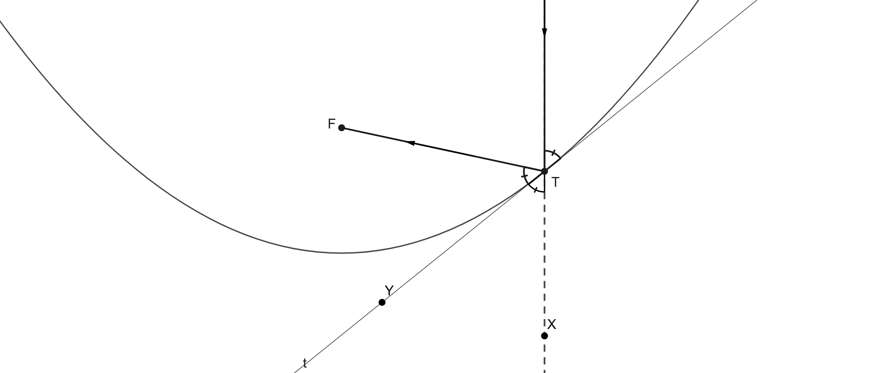
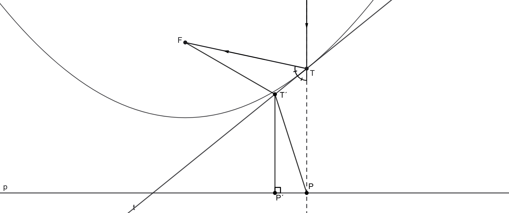

Pro upřesnění: Tato zrcadla ve skutečnosti nemají tvar kuželosečky, ale tělesa, které vznikne její rotací kolem osy – paraboloidu, koule, elipsoidu, nebo hyperboloidu.
Parabolické zrcadlo
Z těchto zrcadel vyjma běžného kulového je parabolické zrcadlo asi nejpoužívanější. Duté parabolické zrcadlo má tu vlastnost, že paprsky přicházející rovnoběžně s optickou osou jsou po odrazu soustředěny přesně do ohniska paraboly. Naopak (podle principu záměnnosti chodu paprsků) paprsky vyslané z ohniska se odrazí rovnoběžně s optickou osou. Dále si geometricky dokážeme, že tomu tak skutečně je.
Důkaz vlastnosti parabolického zrcadla

Na obrázku výše vidíme řez paraboloidem rovinou, ve které leží přicházející paprsek rovnoběžný s osou a optická osa. Paprsek dopadá na zrcadlo v bodě `T`. Parabolu můžeme v místě odrazu paprsku nahradit její tečnou `t`. Prodlužme dopadající paprsek do bodu `X` a označme `Y` bod na tečně „pod“ parabolou. Paprsek se odrazí tak, že dopadající a odražený paprsek svírají s tečnou stejný úhel. První z těchto úhlů je ovšem roven vrcholovému úhlu `XTY`. Paprsek se odrazí do ohniska právě tehdy, když je tečna `t` osou úhlu `FTX`.
Terminologická poznámka: Úsečky spojující bod na kuželosečce s ohnisky se nazývají průvodiče. Parabola má pouze jedno ohnisko, druhým průvodičem bodu je rovnoběžka s osou jdoucí oním bodem. (Můžeme si představit, že druhé ohnisko leží v nekonečnu.)
V našem případě jsou tedy oba paprsky průvodiči bodu `T` a úhel `FTX` se nazývá vnější úhel průvodičů. Potřebujeme tedy dokázat, že tečna paraboly půlí vnější úhel průvodičů.

Buď `t` osa vnějšího úhlu průvodičů a `T´` libovolný bod na ní různý od `T`. Dokážeme, že bod `T´` neleží na parabole a zjevně `t` není rovnoběžná s osou paraboly, tudíž `t` je tečna paraboly.
Označme `P`, `P´` paty kolmic z bodů `T`, `T´` na řídící přímky paraboly `p`. Z vlastností paraboly plyne, že `|FT|=|TP|`. Trojúhelníky `T T´F` a `T T´P` jsou shodné, protože mají stejně dlouhé strany proti vrcholu `T´`, společnou stranu `T T´` a shodné úhly u vrcholu `T`. Platí tedy, že `|FT´|=|T´P|` a úsečka `T´P` je delší než `T´P´`, protože je odvěsnou v pravoúhlém trojúhelníku `T´P´P`. Dohromady je `|FT´| > |T´P´|`. Aby `T´` ležel na parabole, muselo by ale `|FT´| = |T´P´|`.
Využití
- satelitní antény
- hvězdářské dalekohledy
- radioteleskopy
soustředění paprsků slunce do jednoho bodu
- solární pec
- zapálení olympijského ohně
- světlomety (například na autě)
- parabolický mikrofon